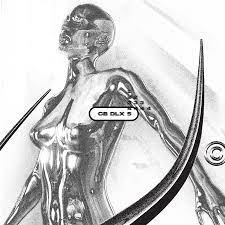
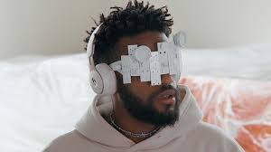

This Year's Selections
Hover over the gallery of each artist to read more about their best works!
#1. Japanese Breakfast

Japanese Breakfast performing at the Day In Day Out Festival in Seattle, Washington, 2022

A nominated single from 2022 that propelled her to the top of the charts for our annual pick

While the album is from 2021, it is a must listen for all JB fans!

"Sable," released in 2021, is an indie video game developed by Shedworks and published by Raw Fury.
Set in a mesmerizing open-world desert, the game follows the titular character, Sable, as she embarks on a rite of passage known as "The Mask-Wearing."
With a distinctive art style inspired by French artist Moebius, "Sable" received acclaim for its unique visuals and atmospheric storytelling.
Complementing the game's immersive experience is the ethereal soundtrack composed by indie musician Michelle Zauner, known by her stage name Japanese Breakfast.
Zauner's hauntingly beautiful musical contributions earned widespread praise, seamlessly weaving into the game's narrative to
enhance the emotional resonance of Sable's journey, contributing significantly to the overall success and artistic impact of the game.
#2. Makiza
In "La Rosa de los Vientos," Makiza crafts a captivating blend of hip-hop and Latin rhythms that defines the essence of their musical collaboration.

"Casino Royale" is their second studio album released in 2005.
It features hot singles like "En Paro" and "La Vida Es Como un Casino"
Makiza, a pioneering hip-hop group hailing from Chile, emerged in the late 1990s and played a pivotal role in shaping the Latin American rap scene.
Comprised of MCs Anita Tijoux and Seo2, along with DJ Squat, Makiza's innovative blend of socially conscious lyrics, sharp rhymes, and eclectic beats
garnered them widespread acclaim, establishing them as trailblazers in the Latin American hip-hop landscape.
#3. Duckwrth
Jared Leonardo Lee, better known by his stage name Duckwrth, is an American rapper, singer, songwriter, and artist

"Start a Riot" is a rap banger featured on the blockbuster "Spider-Man: Into the Spider-Verse".
It's a high-energy track that perfectly encapsulates the spirit of rebellion and freedom.

“BOY” from the “an XTRA UUGLY Mixtape” stands out as a track that sparks discussions,
particularly with its poignant lyrics about race, gender, and love.
"Chrome Bull" by Duckwrth is an astonishing EP that pushes the boundaries of modern dance music.
The EP opens with the mind-meltingly groovy track "11:30", which employs a constant deep bass and a subdued synth lead underneath Duckwrth's signature buttery-smooth vocals.
The song "Ce Soir" takes a different approach, using light layers of distortion and robotic backing vocals to accentuate a sensual, deeper melody.
The EP also includes the high-energy track "Power", which ends the EP on a high note with its distorted instrumental and powerfully confident lyrics.
Overall, "Chrome Bull" showcases Duckwrth's ability to constantly innovate and push dance music into the future.

The deluxe edition of Chrome Bull features five-extra tracks, including "007" and "Feel the Feels" which are fan favorites
“Giants” by True Damage blended multilingual lyrics and hip-hop beats, accumulating 3 million YouTube views within just six hours in 2019

Released during the pandemic, “Kiss U Right Now” from Duckwrth’s album “SuperGood” explores the challenges of maintaining virtual romantic connections
Past Picks
- Joji - The enigmatic Japanese-Australian artist who seamlessly combines soft R&B with introspective lyricism
- BENEE - A New Zealand pop sensation who continously captivates audiences with her infectious beats and relatable narratives
- Dhruv - An indie maestro who paints sonic landscapes through blending bedroom pop and alternative sounds together
Honorable Mentions
Here are our other top choices, but they sadly did not make into this year's top three.
That's ok though. Great even. Since now they have a better chance to shine next year!
Spill Tab is a genre-defying artist who crafts ethereal soundscapes with her raw vocal displays of emotion;
her French background and New York musical experience are both evident inspirations for her work
Emotional Oranges is a dynamic duo that transcends genres with their soulful blend of R&B and pop--
forming waves in the West Coast where they were based from